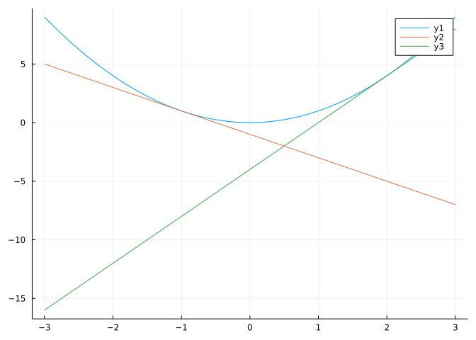
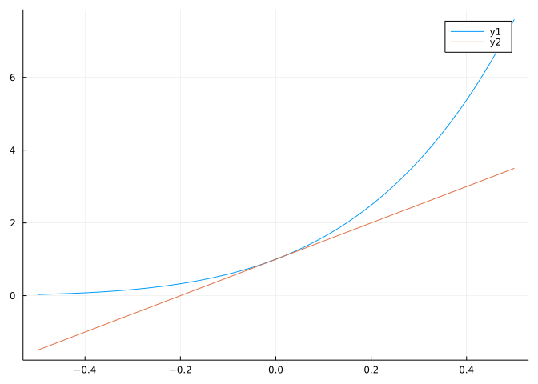
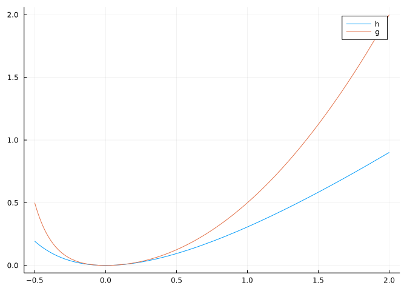

f(x) = x^2
plot(f, -3, 3)
plot!(tangent(f, -1))
plot!(tangent(f, 2))
This section uses these add-on packages:
The derivative of \(f(x)\) has the interpretation as the slope of the tangent line. The tangent line is the line that best approximates the function at the point.
Using the point-slope form of a line, we see that the tangent line to the graph of \(f(x)\) at \((c,f(c))\) is given by:
\[ y = f(c) + f'(c) \cdot (x - c). \]
This is written as an equation, though we prefer to work with functions within Julia. Here we write such a function as an operator - it takes a function f and returns a function representing the tangent line.
(Recall, the -> indicates that an anonymous function is being generated.)
This function along with the f' notation for automatic derivatives is defined in the CalculusWithJulia package.
We make some graphs with tangent lines:
The graph shows that near the point, the line and function are close, but this need not be the case away from the point. We can express this informally as
\[ f(x) \approx f(c) + f'(c) \cdot (x-c) \]
with the understanding this applies for \(x\) “close” to \(c\).
Usually for the applications herein, instead of \(x\) and \(c\) the two points are \(x+\Delta_x\) and \(x\). This gives:
Linearization: \(\Delta_y = f(x +\Delta_x) - f(x) \approx f'(x) \Delta_x\), for small \(\Delta_x\).
This section gives some implications of this fact and quantifies what “close” can mean.
There are several approximations that are well known in physics, due to their widespread usage:
Symbolically:
Symbolically:
(The log1p function implements a more accurate version of this function when numeric values are needed.)
Symbolically:
Symbolically:
In each of these cases, a more complicated non-linear function is well approximated in a region of interest by a simple linear function.

The plot shows the tangent line with slope \(dy/dx\) and the actual change in \(y\), \(\Delta y\), for some specified \(\Delta x\). The small gap above the sine curve is the error were the value of the sine approximated using the drawn tangent line. We can see that approximating the value of \(\Delta y = \sin(c+\Delta x) - \sin(c)\) with the often easier to compute \((dy/dx) \cdot \Delta x = f'(c)\Delta x\) - for small enough values of \(\Delta x\) - is not going to be too far off provided \(\Delta x\) is not too large.
This approximation is known as linearization. It can be used both in theoretical computations and in pratical applications. To see how effective it is, we look at some examples.
If \(f(x) = \sin(x)\), \(c=0\) and \(\Delta x= 0.1\) then the values for the actual change in the function values and the value of \(\Delta y\) are:
The values are pretty close. But what is \(0.1\) radians? Lets use degrees. Suppose we have \(\Delta x = 10^\circ\):
(0.17364817766693033, 0.17453292519943295)They agree until the third decimal value. The percentage error is just \(1/2\) a percent:
The relative error is defined by
\[ \big| \frac{\text{actual} - \text{approximate}}{\text{actual}} \big|. \]
However, typically with linearization, we talk about the relative change, not relative error, as the denominator is easier to compute. This is
\[ \frac{f(x + \Delta_x) - f(x)}{f(x)} = \frac{\Delta_y}{f(x)} \approx \frac{f'(x) \cdot \Delta_x}{f(x)} \]
The percentage change multiplies by \(100\).
What is the relative change in surface area of a sphere if the radius changes from \(r\) to \(r + dr\)?
We have \(S = 4\pi r^2\) so the approximate relative change, \(dy/S\) is given, using the derivative \(dS/dr = 8\pi r\), by
\[ \frac{8\pi\cdot r\cdot dr}{4\pi r^2} = 2r\cdot dr. \]
We are traveling \(60\) miles. At \(60\) miles an hour, we will take \(60\) minutes (or one hour). How long will it take at \(70\) miles an hour? (Assume you can’t divide, but, instead, can only multiply!)
Well the answer is \(60/70\) hours or \(60/70 \cdot 60\) minutes. But we can’t divide, so we turn this into a multiplication problem via some algebra:
\[ \frac{60}{70} = \frac{60}{60 + 10} = \frac{1}{1 + 10/60} = \frac{1}{1 + 1/6}. \]
Okay, so far no calculator was needed. We wrote \(70 = 60 + 10\), as we know that \(60/60\) is just \(1\). This almost gets us there. If we really don’t want to divide, we can get an answer by using the tangent line approximation for \(1/(1+x)\) around \(x=0\). This is \(1/(1+x) \approx 1 - x\). (You can check by finding that \(f'(0) = -1\).) Thus, our answer is approximately \(5/6\) of an hour or 50 minutes.
How much in error are we?
That’s about \(3\) percent. Not bad considering we could have done all the above in our head while driving without taking our eyes off the road to use the calculator on our phone for a division.
A \(10\)cm by \(10\)cm by \(10\)cm cube will contain \(1\) liter (\(1000\)cm\(^3\)). In manufacturing such a cube, the side lengths are actually \(10.1\) cm. What will be the volume in liters? Compute this with a linear approximation to \((10.1)^3\).
Here \(f(x) = x^3\) and we are asked to approximate \(f(10.1)\). Letting \(c=10\), we have:
\[ f(c + \Delta) \approx f(c) + f'(c) \cdot \Delta = 1000 + f'(c) \cdot (0.1) \]
Computing the derivative can be done easily, we get for our answer:
This is a relative error as a percent of:
The manufacturer may be interested instead in comparing the volume of the actual object to the \(1\) liter target. They might use the approximate value for this comparison, which would yield:
This is off by about \(3\) percent. Not so bad for some applications, devastating for others.
Eratosthenes is said to have been the first person to estimate the radius (or by relation the circumference) of the earth. The basic idea is based on the difference of shadows cast by the sun. Suppose Eratosthenes sized the circumference as \(252,000\) stadia. Taking \(1\)`stadia as160meters and the actual radius of the earth as6378.137kilometers, we can convert to see that Eratosthenes estimated the radius as6417.
If Eratosthenes were to have estimated the volume of a spherical earth, what would be his approximate percentage change between his estimate and the actual?
Using \(V = 4/3 \pi r^3\) we get \(V' = 4\pi r^2\):
A simple pendulum is comprised of a massless “bob” on a rigid “rod” of length \(l\). The rod swings back and forth making an angle \(\theta\) with the perpendicular. At rest \(\theta=0\), here we have \(\theta\) swinging with \(\lvert\theta\rvert \leq \theta_0\) for some \(\theta_0\).
According to Wikipedia - and many introductory physics book - while swinging, the angle \(\theta\) varies with time following this equation:
\[ \theta''(t) + \frac{g}{l} \sin(\theta(t)) = 0. \]
That is, the second derivative of \(\theta\) is proportional to the sine of \(\theta\) where the proportionality constant involves \(g\) from gravity and the length of the “rod.”
This would be much easier if the second derivative were proportional to the angle \(\theta\) and not its sine.
Huygens used the approximation of \(\sin(x) \approx x\), noted above, to say that when the angle is not too big, we have the pendulum’s swing obeying \(\theta''(t) = -g/l \cdot t\). Without getting too involved in why, we can verify by taking two derivatives that \(\theta_0\sin(\sqrt{g/l}\cdot t)\) will be a solution to this modified equation.
With this solution, the motion is periodic with constant amplitude (assuming frictionless behaviour), as the sine function is. More surprisingly, the period is found from \(T = 2\pi/(\sqrt{g/l}) = 2\pi \sqrt{l/g}\). It depends on \(l\) - longer “rods” take more time to swing back and forth - but does not depend on the how wide the pendulum is swinging between (provided \(\theta_0\) is not so big the approximation of \(\sin(x) \approx x\) fails). This latter fact may be surprising, though not to Galileo who discovered it.
The Leibniz notation for a derivative is \(dy/dx\) indicating the change in \(y\) as \(x\) changes. It proves convenient to decouple this using differentials \(dx\) and \(dy\). What do these notations mean? They measure change along the tangent line in same way \(\Delta_x\) and \(\Delta_y\) measure change for the function. The differential \(dy\) depends on both \(x\) and \(dx\), it being defined by \(dy=f'(x)dx\). As tangent lines locally represent a function, \(dy\) and \(dx\) are often associated with an infinitesimal difference.
Taking \(dx = \Delta_x\), as in the previous graphic, we can compare \(dy\) – the change along the tangent line given by \(dy/dx \cdot dx\) – and \(\Delta_y\) – the change along the function given by \(f(x + \Delta_x) - f(x)\). The linear approximation, \(f(x + \Delta_x) - f(x)\approx f'(x)dx\), says that
\[ \Delta_y \approx dy; \quad \text{ when } \Delta_x = dx \]
How good is the approximation? Graphically we can see it is pretty good for the graphs we choose, but are there graphs out there for which the approximation is not so good? Of course. However, we can say this (the Lagrange form of a more general Taylor remainder theorem):
Let \(f(x)\) be twice differentiable on \(I=(a,b)\), \(f\) is continuous on \([a,b]\), and \(a < c < b\). Then for any \(x\) in \(I\), there exists some value \(\xi\) between \(c\) and \(x\) such that \(f(x) = f(c) + f'(c)(x-c) + (f''(\xi)/2)\cdot(x-c)^2\).
That is, the error is basically a constant depending on the concavity of \(f\) times a quadratic function centered at \(c\).
For \(\sin(x)\) at \(c=0\) we get \(\lvert\sin(x) - x\rvert = \lvert-\sin(\xi)\cdot x^2/2\rvert\). Since \(\lvert\sin(\xi)\rvert \leq 1\), we must have this bound: \(\lvert\sin(x) - x\rvert \leq x^2/2\).
Can we verify? Let’s do so graphically:
The graph shows a tight bound near \(0\) and then a bound over this viewing window.
Similarly, for \(f(x) = \log(1 + x)\) we have the following at \(c=0\):
\[ f'(x) = 1/(1+x), \quad f''(x) = -1/(1+x)^2. \]
So, as \(f(c)=0\) and \(f'(c) = 1\), we have
\[ \lvert f(x) - x\rvert \leq \lvert f''(\xi)\rvert \cdot \frac{x^2}{2} \]
We see that \(\lvert f''(x)\rvert\) is decreasing for \(x > -1\). So if \(-1 < x < c\) we have
\[ \lvert f(x) - x\rvert \leq \lvert f''(x)\rvert \cdot \frac{x^2}{2} = \frac{x^2}{2(1+x)^2}. \]
And for \(c=0 < x\), we have
\[ \lvert f(x) - x\rvert \leq \lvert f''(0)\rvert \cdot \frac{x^2}{2} = x^2/2. \]
Plotting we verify the bound on \(|\log(1+x)-x|\):
h(x) = abs(log(1+x) - x)
g(x) = x < 0 ? x^2/(2*(1+x)^2) : x^2/2
plot(h, -0.5, 2, label="h")
plot!(g, -0.5, 2, label="g")
Again, we see the very close bound near \(0\), which widens at the edges of the viewing window.
To see formally why the remainder is as it is, we recall the mean value theorem in the extended form of Cauchy. Suppose \(c=0\), \(x > 0\), and let \(h(x) = f(x) - (f(0) + f'(0) x)\) and \(g(x) = x^2\). Then we have that there exists a \(e\) with \(0 < e < x\) such that
\[ \text{error} = h(x) - h(0) = (g(x) - g(0)) \frac{h'(e)}{g'(e)} = x^2 \cdot \frac{1}{2} \cdot \frac{f'(e) - f'(0)}{e} = x^2 \cdot \frac{1}{2} \cdot f''(\xi). \]
The value of \(\xi\), from the mean value theorem applied to \(f'(x)\), satisfies \(0 < \xi < e < x\), so is in \([0,x].\)
SymPy can find the tangent line expression as a special case of its series function (which implements Taylor series). The series function needs an expression to approximate; a variable specified, as there may be parameters in the expression; a value \(c\) for where the expansion is taken, with default \(0\); and a number of terms, for this example \(2\) for a constant and linear term. (There is also an optional dir argument for one-sided expansions.)
Here we see the answer provided for \(e^{\sin(x)}\):
The expression \(1 + x\) comes from the fact that exp(sin(0)) is \(1\), and the derivative exp(sin(0)) * cos(0) is also \(1\). But what is the \(\mathcal{O}(x^2)\)?
We know the answer is precisely \(f''(\xi)/2 \cdot x^2\) for some \(\xi\), but were we only concerned about the scale as \(x\) goes to zero that when \(f''\) is continuous that the error when divided by \(x^2\) goes to some finite value (\(f''(0)/2\)). More generally, if the error divided by \(x^2\) is bounded as \(x\) goes to \(0\), then we say the error is “big oh” of \(x^2\).
The big “oh” notation, \(f(x) = \mathcal{O}(g(x))\), says that the ratio \(f(x)/g(x)\) is bounded as \(x\) goes to \(0\) (or some other value \(c\), depending on the context). A little “oh” (e.g., \(f(x) = \mathcal{o}(g(x))\)) would mean that the limit \(f(x)/g(x)\) would be \(0\), as \(x\rightarrow 0\), a much stronger assertion.
Big “oh” and little “oh” give us a sense of how good an approximation is without being bogged down in the details of the exact value. As such they are useful guides in focusing on what is primary and what is secondary. Applying this to our case, we have this rough form of the tangent line approximation valid for functions having a continuous second derivative at \(c\):
\[ f(x) = f(c) + f'(c)(x-c) + \mathcal{O}((x-c)^2). \]
Suppose \(f(x)\) and \(g(x)\) are represented by their tangent lines about \(c\), respectively:
\[ \begin{align*} f(x) &= f(c) + f'(c)(x-c) + \mathcal{O}((x-c)^2), \\ g(x) &= g(c) + g'(c)(x-c) + \mathcal{O}((x-c)^2). \end{align*} \]
Consider the sum, after rearranging we have:
\[ \begin{align*} f(x) + g(x) &= \left(f(c) + f'(c)(x-c) + \mathcal{O}((x-c)^2)\right) + \left(g(c) + g'(c)(x-c) + \mathcal{O}((x-c)^2)\right)\\ &= \left(f(c) + g(c)\right) + \left(f'(c)+g'(c)\right)(x-c) + \mathcal{O}((x-c)^2). \end{align*} \]
The two big “Oh” terms become just one as the sum of a constant times \((x-c)^2\) plus a constant time \((x-c)^2\) is just some other constant times \((x-c)^2\). What we can read off from this is the term multiplying \((x-c)\) is just the derivative of \(f(x) + g(x)\) (from the sum rule), so this too is a tangent line approximation.
Is it a coincidence that a basic algebraic operation with tangent lines approximations produces a tangent line approximation? Let’s try multiplication:
\[ \begin{align*} f(x) \cdot g(x) &= [f(c) + f'(c)(x-c) + \mathcal{O}((x-c)^2)] \cdot [g(c) + g'(c)(x-c) + \mathcal{O}((x-c)^2)]\\ &=[(f(c) + f'(c)(x-c)] \cdot [g(c) + g'(c)(x-c)] + (f(c) + f'(c)(x-c) \cdot \mathcal{O}((x-c)^2)) + g(c) + g'(c)(x-c) \cdot \mathcal{O}((x-c)^2)) + [\mathcal{O}((x-c)^2))]^2\\ &= [(f(c) + f'(c)(x-c)] \cdot [g(c) + g'(c)(x-c)] + \mathcal{O}((x-c)^2)\\ &= f(c) \cdot g(c) + [f'(c)\cdot g(c) + f(c)\cdot g'(c)] \cdot (x-c) + [f'(c)\cdot g'(c) \cdot (x-c)^2 + \mathcal{O}((x-c)^2)] \\ &= f(c) \cdot g(c) + [f'(c)\cdot g(c) + f(c)\cdot g'(c)] \cdot (x-c) + \mathcal{O}((x-c)^2) \end{align*} \]
The big “oh” notation just sweeps up many things including any products of it and the term \(f'(c)\cdot g'(c) \cdot (x-c)^2\). Again, we see from the product rule that this is just a tangent line approximation for \(f(x) \cdot g(x)\).
The basic mathematical operations involving tangent lines can be computed just using the tangent lines when the desired accuracy is at the tangent line level. This is even true for composition, though there the outer and inner functions may have different “\(c\)”s.
Knowing this can simplify the task of finding tangent line approximations of compound expressions.
For example, suppose we know that at \(c=0\) we have these formula where \(a \approx b\) is a shorthand for the more formal \(a=b + \mathcal{O}(x^2)\):
\[ \sin(x) \approx x, \quad e^x \approx 1 + x, \quad \text{and}\quad 1/(1+x) \approx 1 - x. \]
Then we can immediately see these tangent line approximations about \(x=0\):
\[ e^x \cdot \sin(x) \approx (1+x) \cdot x = x + x^2 \approx x, \]
and
\[ \frac{\sin(x)}{e^x} \approx \frac{x}{1 + x} \approx x \cdot(1-x) = x-x^2 \approx x. \]
Since \(\sin(0) = 0\), we can use these to find the tangent line approximation of
\[ e^{\sin(x)} \approx e^x \approx 1 + x. \]
Note that \(\sin(\exp(x))\) is approximately \(\sin(1+x)\) but not approximately \(1+x\), as the expansion for \(\sin\) about \(1\) is not simply \(x\).
The TaylorSeries packages will do these calculations in a manner similar to how SymPy transforms a function and a symbolic variable into a symbolic expression.
For example, we have
The number type and the order is specified to the constructor. Linearization is order \(1\), other orders will be discussed later. This variable can now be composed with mathematical functions and the linearization of the function will be returned:
Automatic differentiation (forward mode) essentially uses this technique. A “dual” is introduced which has terms \(a +b\epsilon\) where \(\epsilon^2 = 0\). The \(\epsilon\) is like \(x\) in a linear expansion, so the a coefficient encodes the value and the b coefficient reflects the derivative at the value. Numbers are treated like a variable, so their “b coefficient” is a 1. Here then is how 0 is encoded:
Then what is \(\(x)\)? It should reflect both \((\sin(0), \cos(0))\) the latter being the derivative of \(\sin\). We can see this is almost what is computed behind the scenes through:
CodeInfo( 1 ─ x = DualNumbers.value(z) │ xp = DualNumbers.epsilon(z) │ %3 = DualNumbers.sin(x) │ %4 = xp │ %5 = DualNumbers.cos(x) │ %6 = %4 * %5 │ %7 = DualNumbers.Dual(%3, %6) └── return %7 )
This output of @code_lowered can be confusing, but this simple case needn’t be. Working from the end we see an assignment to a variable named %7 of Dual(%3, %6). The value of %3 is sin(x) where x is the value 0 above. The value of %6 is cos(x) times the value 1 above (the xp), which reflects the chain rule being used. (The derivative of sin(u) is cos(u)*du.) So this dual number encodes both the function value at 0 and the derivative of the function at 0.)
Similarly, we can see what happens to log(x) at 1 (encoded by Dual(1,1)):
CodeInfo( 1 ─ x = DualNumbers.value(z) │ xp = DualNumbers.epsilon(z) │ %3 = DualNumbers.log(x) │ %4 = xp │ %5 = 1 / x │ %6 = %4 * %5 │ %7 = DualNumbers.Dual(%3, %6) └── return %7 )
We can see the derivative again reflects the chain rule, it being given by 1/x * xp where xp acts like dx (from assignments %5 and %4). Comparing the two outputs, we see only the assignment to %4 differs, it reflecting the derivative of the function.
What is the right linear approximation for \(\sqrt{1 + x}\) near \(0\)?
What is the right linear approximation for \((1 + x)^k\) near \(0\)?
What is the right linear approximation for \(\cos(\sin(x))\) near \(0\)?
What is the right linear approximation for \(\tan(x)\) near \(0\)?
What is the right linear approximation of \(\sqrt{25 + x}\) near \(x=0\)?
Let \(f(x) = \sqrt{x}\). Find the actual error in approximating \(f(26)\) by the value of the tangent line at \((25, f(25))\) at \(x=26\).
An estimate of some quantity was \(12.34\) the actual value was \(12\). What was the percentage error?
Find the percentage error in estimating \(\sin(5^\circ)\) by \(5 \pi/180\).
The side length of a square is measured roughly to be \(2.0\) cm. The actual length \(2.2\) cm. What is the difference in area (in absolute values) as estimated by a tangent line approximation.
The Birthday problem computes the probability that in a group of \(n\) people, under some assumptions, that no two share a birthday. Without trying to spoil the problem, we focus on the calculus specific part of the problem below:
\[ \begin{align*} p &= \frac{365 \cdot 364 \cdot \cdots (365-n+1)}{365^n} \\ &= \frac{365(1 - 0/365) \cdot 365(1 - 1/365) \cdot 365(1-2/365) \cdot \cdots \cdot 365(1-(n-1)/365)}{365^n}\\ &= (1 - \frac{0}{365})\cdot(1 -\frac{1}{365})\cdot \cdots \cdot (1-\frac{n-1}{365}). \end{align*} \]
Taking logarithms, we have \(\log(p)\) is
\[ \log(1 - \frac{0}{365}) + \log(1 -\frac{1}{365})+ \cdots + \log(1-\frac{n-1}{365}). \]
Now, use the tangent line approximation for \(\log(1 - x)\) and the sum formula for \(0 + 1 + 2 + \dots + (n-1)\) to simplify the value of \(\log(p)\):
If \(n = 10\), what is the approximation for \(p\) (not \(\log(p)\))?
If \(n=100\), what is the approximation for \(p\) (not \(\log(p)\)?